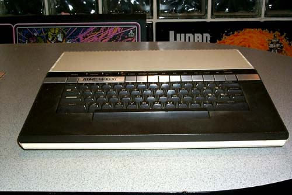

ATARI XL Computer Series
Released between 1982 and 1984
ATARI 1200XL
64ko. (1982-83)
: The short-lived ATARI 1200XL was released with 64Ko of memory in 1982 and was only available in the United States.")
The ATARI 1200XL was released with 64Ko of memory in 1982. Only available in the United States and deemed a commercial failure, it was quickly removed from the market and replaced by the 600XL/800XL combo. No PBI. NTSC only.
ATARI 600XL
16Ko. Expandable to 64Ko. (1983-84)
: The ATARI 600XL was ATARI Inc.'s most affordable system. Released in 1983, it came with 16Ko of RAM (expandable to 64Ko) and was released both in the United States and in Europe where it was a strong seller.")
The ATARI 600XL was ATARI Inc.'s most affordable system. Released in 1983, it came with 16Ko of RAM (expandable to 64Ko) and was released both in the United States and in Europe where it was a strong seller. PBI. NTSC / PAL.
ATARI 800XL
64Ko. Expandable via PBI. (1983-84)
: The ATARI 800XL was ATARI Inc.'s strongest seller and a replacement to the $1200XL. At $300 less than the 1200XL, it offered the same functionalities plus a parallel interface. Released in 1983 with 64Ko of memory. Strongest seller of the 8-bit line.")
The ATARI 800XL was ATARI Inc.'s strongest seller and a replacement to the $1200XL. At $300 less than the 1200XL, it offered the same functionalities plus a parallel interface. Released in 1983 with 64Ko of memory. Strongest seller of the 8-bit line. PBI. NTSC / PAL / SECAM
ATARI 1400XL
64Ko. Speech Synth. Modem. PBI. (1984)
The ATARI 1400XL included 64Ko of RAM, a speech synthetizer, a built-in modem and the new memory management chip, FREDDIE. PBI. NTSC only. Prototype. Unreleased
ATARI 1450XLD
64Ko. Built-in Disk Drive. (1984)
: In addition of the 1400XL features, the ATARI 1450XLD included a parallel disk drive controller and a 360K double density disk drive. PBI. NTSC only. Prototype / Unreleased")
In addition of the 1400XL features, the ATARI 1450XLD included a parallel disk drive controller and a 360K double density disk drive. PBI. NTSC only. Prototype. Unreleased.
ATARI 1600XL
PC / ATARI 8-Bit Hybrid (1983)
: The ATARI 1600XL was to be a groundbreaking hybrid system with 2 modes: IBM PC compatible (Intel 8088 CPU) and the classic ATARI 8-Bit chipset (6502 et al.). Developed with TOSHIBA. Prototype. Unreleased.")
The ATARI 1600XL was to be a groundbreaking hybrid system with 2 modes: IBM PC compatible (Intel 8088 CPU) and the classic ATARI 8-Bit chipset (6502 et al.). Developed with TOSHIBA. Prototype. Unreleased.